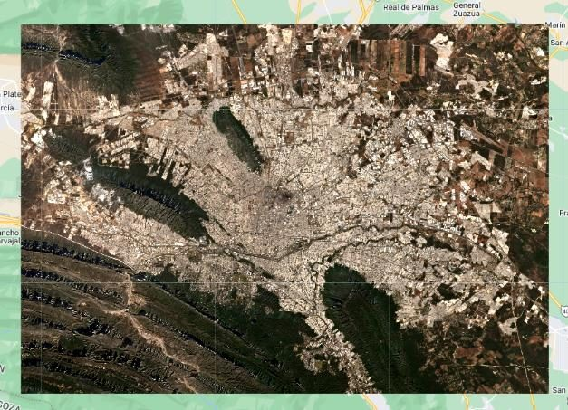

Descargar imagen satelital de Sentinel-2 en Google Earth Engine
Aprende de manera sencilla a filtrar, visualizar y descargar imágenes satelitales de Sentinel-2 desde Google Earth Engine.
Introducción #
En esta guía aprenderás a descargar una imagen satelital de Sentinel-2 con Google Earth Engine. Sentinel-2 es una misión de observación de la Tierra operada por la Agencia Espacial Europea (ESA). Ofrece imágenes de alta resolución espacial y temporal, muy útiles para monitoreo ambiental, agricultura, gestión de recursos naturales y mucho más.
Objetivo #
Filtrar, visualizar y exportar una imagen satelital de Sentinel-2 de una región de interés específica.
Recursos #
Usaremos la colección Sentinel-2 Surface Reflectance (COPERNICUS/S2_SR_HARMONIZED). Sus imágenes están corregidas atmosféricamente y entregan reflectancia de superficie en bandas visibles, infrarrojo cercano e infrarrojo de onda corta, con resoluciones de 10, 20 o 60 metros. Cada imagen incluye metadatos como la fecha de adquisición y el porcentaje de píxeles nubosos.
La misión Sentinel-2 #
Sentinel-2 forma parte del programa Copernicus de la Unión Europea. Sus satélites toman imágenes de toda la superficie terrestre con una revisita de unos 5 días, y sus bandas visibles e infrarrojo cercano tienen 10 m de resolución, más detalle que Landsat.
| Banda | Región del espectro | Resolución |
|---|---|---|
| B2 | Azul | 10 m |
| B3 | Verde | 10 m |
| B4 | Rojo | 10 m |
| B8 | Infrarrojo cercano (NIR) | 10 m |
| B5, B6, B7, B8A | Borde rojo (red edge) | 20 m |
| B11, B12 | Infrarrojo de onda corta (SWIR) | 20 m |
| B1, B9 | Aerosoles y vapor de agua | 60 m |
- B4-B3-B2 da color natural y es la combinación que usamos en este tutorial.
- B8-B4-B3 es un falso color que resalta la vegetación en rojo.
- B11-B8-B2 resulta muy útil en agricultura y para estudiar la humedad del suelo.
¿Por qué HARMONIZED? Desde enero de 2022 cambió el procesamiento de las imágenes de Sentinel-2. La colección S2_SR_HARMONIZED ajusta las escenas nuevas para que sean comparables con las anteriores. Los valores vienen multiplicados por 10 000: un valor de 1000 equivale a una reflectancia de 0,1.
Paso 1: Filtrar con la región de interés #
Con filterBounds() restringimos la colección a la región de interés, y filtramos por fecha y porcentaje de píxeles nubosos para obtener una imagen de buena calidad. Luego tomamos la primera imagen con first() y la recortamos al AOI con clip().
Antes de ejecutar el código, dibuja tu zona de estudio con las herramientas de geometría del mapa y cámbiale el nombre a AOI en el panel de importaciones, porque así la llama el script.
var s2 = ee.ImageCollection("COPERNICUS/S2_SR_HARMONIZED") .filterDate("2023-01-01", "2023-12-01") .filter(ee.Filter.lte('CLOUDY_PIXEL_PERCENTAGE', 5)) .filterBounds(AOI); var firts_s2 = s2.first().clip(AOI);
Paso 2: Visualizar la imagen #
Creamos una variable con los parámetros de visualización usando las bandas B4, B3 y B2 (color verdadero), agregamos la imagen con Map.addLayer() y centramos el mapa en la región de interés con Map.centerObject().
var visArgs_SENT = {bands: 'B4,B3,B2', min: 130, max: 2360, gamma: 1}; Map.addLayer(firts_s2, visArgs_SENT, "Primera imagen de Sentinel-2"); Map.centerObject(AOI, 10);

Paso 3: Exportar la imagen a Google Drive #
Con Export.image.toDrive() exportamos la imagen indicando la descripción, la carpeta de destino, la escala, la región y el formato. Usamos toFloat() para que todas las bandas tengan el mismo tipo de dato. Después ejecutamos la tarea desde la pestaña Tasks.
Export.image.toDrive({ image: firts_s2.toFloat(), description: 'sentinel_image', folder: "sentinel collections", scale: 10, region: AOI, maxPixels: 1E13, fileFormat: "TIFF", formatOptions: { cloudOptimized: true } });
Código completo #
Este es el script completo del tutorial. Cópialo, pégalo en el Code Editor y presiona Run. Luego ejecuta la exportación desde la pestaña Tasks.
// AOI: dibuja tu región de interés con las herramientas de geometría del mapa // y nómbrala "AOI" en el panel de importaciones. // Filtrar la colección por fecha, nubosidad y región var s2 = ee.ImageCollection("COPERNICUS/S2_SR_HARMONIZED") .filterDate("2023-01-01", "2023-12-01") .filter(ee.Filter.lte('CLOUDY_PIXEL_PERCENTAGE', 5)) .filterBounds(AOI); // Primera imagen recortada con la región de interés var firts_s2 = s2.first().clip(AOI); // Visualización var visArgs_SENT = {bands: 'B4,B3,B2', min: 130, max: 2360, gamma: 1}; Map.addLayer(firts_s2, visArgs_SENT, "Primera imagen de Sentinel-2"); Map.centerObject(AOI, 10); // Exportar la imagen a Google Drive Export.image.toDrive({ image: firts_s2.toFloat(), description: 'sentinel_image', folder: "sentinel collections", scale: 10, region: AOI, maxPixels: 1E13, fileFormat: "TIFF", formatOptions: { cloudOptimized: true } });
Conclusiones #
Esta guía muestra los pasos para descargar una imagen de Sentinel-2 con Google Earth Engine. Puedes ajustar los parámetros a tus necesidades, como la región de interés y las fechas. Este proceso es útil para obtener datos satelitales para análisis, investigación o aplicaciones de teledetección.